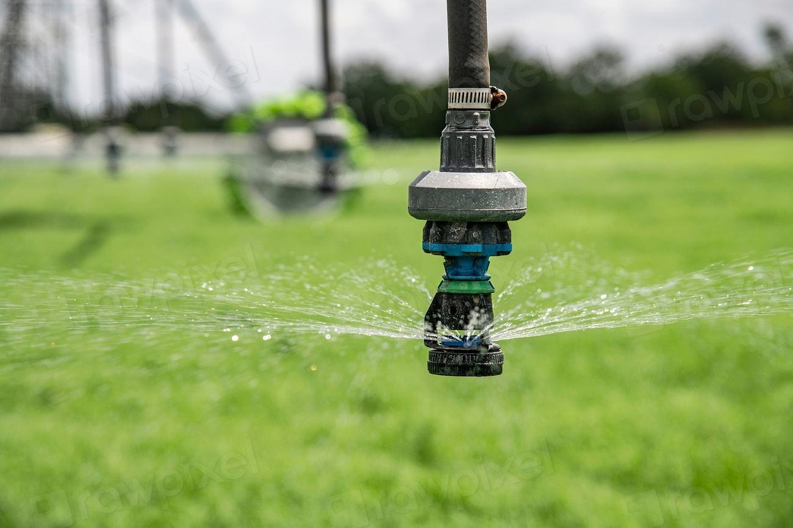

Tjänster
I dag är vi 110 anställda varav 74 skorstensfejare och tekniker. Vi har tagit över tre lokala sotningsfirmor sedan 2017 och behållit personalen i alla tre. Våra lag utgår från Luleå, Piteå, Gällivare och Kalix, och varje lag har ansvar för sina egna gator.
Var i Norrbotten bor du?

Kommunal sotning
Vi har entreprenadavtal med Luleå, Boden, Piteå, Älvsbyn, Kalix, Haparanda, Överkalix, Gällivare och Kiruna. Taxan beslutas av varje kommun, och vi följer deras föreskrifter om frister.
Du kan ansöka hos kommunen om att anlita en annan behörig sotare – men de flesta stannar hos oss.

Brandskyddskontroll
Vid brandskyddskontrollen går vi igenom eldstad, rökkanal, takgenomföring och taksäkerhet. Protokollet går direkt till räddningstjänsten och till dig som pdf.
Under 2025 gjorde vi 11 400 brandskyddskontroller i regionen.

Bostadsbolag och brf
För fastighetsägare samordnar vi sotning, brandskyddskontroll och rengöring av frånluftskanaler i ett och samma besök per trappuppgång. Det betyder färre aviseringar till hyresgästerna.
Ni får en samlad rapport per fastighet och en kontaktperson per region.

Industri och värmeverk
Gruvsamhällen och sågverk har pannor och skorstenar som kräver mer än en villasotare. Vi har rökgasanalysatorer, kamerautrustning och personal med behörighet för höga skorstenar.
Arbeten på industriområden görs med ID06 och egna arbetsmiljöplaner.
Så tar vi hand om en kommun
- 1

Upphandling
Kommunen upphandlar sotningen. Vi tar över befintligt register och personal där det går.
- 2

Planering per gata
Varje lag får sina gator och planerar turerna efter frist, väglag och mörkertid.
- 3

Besök och protokoll
Sotaren rapporterar i surfplattan på plats. Protokoll går till dig och till räddningstjänsten samma dag.
- 4

Årsrapport
Varje kommun får en årsrapport med brister, åtgärder och genomförda besök per distrikt.
Avtal, behörigheter och ledningssystem
- Nio sotningsavtalEntreprenadavtal enligt lagen om skydd mot olyckor med nio kommuner i Norrbotten.
- ISO 9001 och ISO 45001Certifierat ledningssystem för kvalitet och arbetsmiljö sedan 2020.
- 31 behöriga teknikerSkorstensfejartekniker med behörighet för brandskyddskontroll enligt MSB:s föreskrifter.
- ID06 och höga skorstenarAll personal har ID06, och sex tekniker har fallskydds- och liftbehörighet för industriskorstenar.